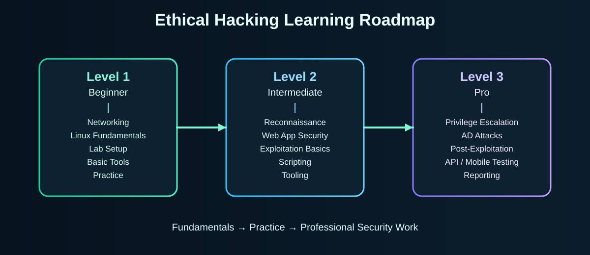

Zero se hero tak — 12-week roadmap, real tools ke logos ke saath, ready-made cheatsheets, hands-on labs, aur roz ka cybersecurity awareness quiz. Sab kuch ek jagah, bilkul free.

Har visitor ko ek question roz milta hai (upar Question of the Day). Full quiz 8 random sawaal lata hai — phishing, OTP scams, digital arrest, ransomware — sab real-world attacks jo India me chal rahe hain.
Har phase kaafi hai uske liye jo serious hai — 3-4 ghante weekly, apne lab me.
Kali Linux install, terminal commands, file permissions, IP/DNS/ports/protocols — networking samjhe bina hacker nahi bante.
Target ki jaankari legally collect karna — OSINT, port scanning, service enumeration (sirf apne/permission wale targets par).
OWASP Top 10 — SQL injection, XSS, broken access control. Burp Suite ke sahte proxy setup karke apne test app par practice.
Metasploitable lab me exploitation, phir Linux/Windows privilege escalation — LinPEAS/WinPEAS ke saath.
Password cracking (apne hash par), wireless security concepts — WEP/WPA2/WPA3 ka farak samjho.
CTF platforms par flags dhoondo, writeups likho (template repo me hai), aur CEH → eJPT → OSCP ka certification path samjho.
14 essential tools, category-wise. Har card me kaam, key command aur official site.
| Tool | Category | Level | Best For |
|---|---|---|---|
| Nmap | Recon | Beginner | Network & port scanning |
| Wireshark | Analysis | Beginner | Packet capture & analysis |
| Burp Suite | Web | Intermediate | Web app testing proxy |
| OWASP ZAP | Web | Beginner | Free web scanner |
| Metasploit | Exploit | Advanced | Exploitation framework (labs) |
| sqlmap | Web/DB | Intermediate | SQL injection testing |
| Hydra / Hashcat / John | Password | Intermediate | Password auditing (own systems) |
| Aircrack-ng | Wireless | Advanced | WiFi security auditing |
| Nikto | Scanner | Beginner | Web server misconfig scan |
| LinPEAS/WinPEAS | Privesc | Advanced | Privilege escalation enum |
| Ghidra | Reverse Eng. | Advanced | Binary analysis |
| Netcat | Network | Beginner | TCP/UDP Swiss-army knife |
Revision ke liye short command sheets — exam ya lab se pehle ek baar dekh lo.
Sirf padhna nahi — chalao. Ye chhote Python tools apne lab me test karo, aur hardware guide padho.
Ethical hacking = permission ke andar. India me cyber law ko samajhna bhi skill hai.